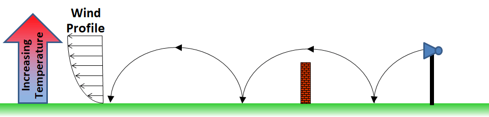
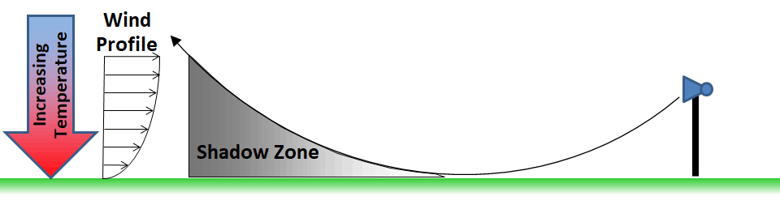

HTML CreatorAtmospheric refraction is a complex process by which sound can bend, caused by vertical variations in the wind speed and temperature. This is caused by changes in the speed of sound with altitude. The speed of sound is affected by the air temperature and wind speed, with sound traveling faster in warmer air, and sound that travels downwind travels faster than sound that travels upwind.
It is the variations of the speed of sound with altitude that cause refraction. Take, for example, a thermal inversion. This is a condition, typical in early mornings before the sun has a chance to warm the ground, where the air is cooler close to the ground and gets warmer at higher altitudes. Fog and low laying clouds are often evident during an inversion. During an inversion, the sound at altitude travels faster (because of the warmer air) than the sound at lower altitudes. The result is that the sound is ‘bent’ downward. This is similar to sound traveling downwind. The figure below shows a representation of how sound travels during an inversion (or down wind).
Inversion conditions allow sound to travel farther. In some situations, the sound can even ‘bounce’ along the ground, and travel over barriers. On example people may be familiar with involves highway noise barriers. Residents living behind a barrier will say that sometimes they cannot hear the road, and sometimes it seems like the road is right next door. The difference is that, under inversion conditions, the sound can actually bypass the barrier completely!

The opposite of an inversion is called a thermal lapse. This occurs after the sun has had a chance to warm the ground, and the air close to the ground is warmer than the air at altitude. This is typical of sunny afternoons, with high altitude clouds. When there is a thermal lapse the sound travels faster along the ground (with the warmer air) and slower at altitude. The result is that the sound tends to ‘bend’ upward. The same effect is achieved if sound has to travel upwind. This type of atmospheric refraction can result in a shadow-zone – a region where sound has difficulty entering because it has been bent up and away from the ground. Therefore, lapse conditions are poor for long-range sound propagation. A thermal lapse can be seen graphically in the figure below.

HTML Creator